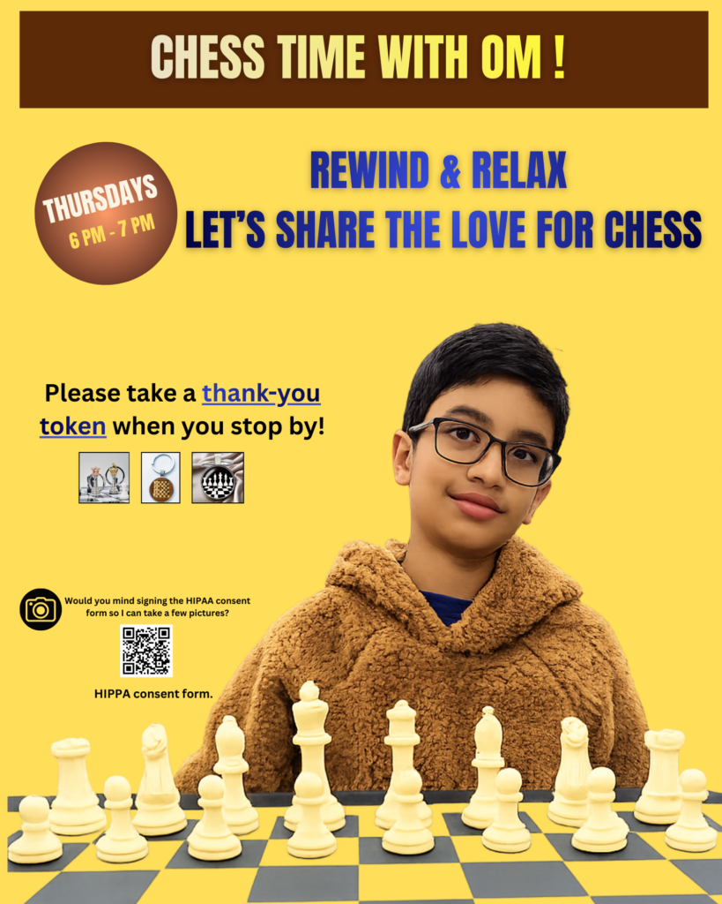

On a chilly evening in November 2025, my dad drove me to the biggest Ronald McDonald House in the USA, in Columbus, Ohio, to pitch chess as a volunteering activity.
I was nervous. I already had a lot of coaching hours behind me from teaching kids in Tanzania and Uganda, but here I would be meeting people who were there for unfortunate reasons. I kept asking myself whether I was emotionally equipped to handle those encounters.
The team listened patiently while I explained why I loved chess and why I believed it could help residents take their minds off their current struggles. I could tell I had not fully convinced them — they liked the passion but were unsure the residents would reciprocate. Still, they gave me a chance: one weekly evening slot, starting January 2026.
